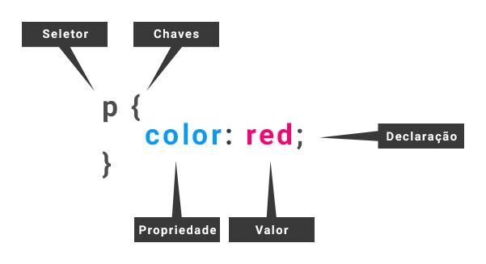

| artigo anterior | index |
Uma regra de estilização (rule sets) é a unidade básica de uma folha de estilos, é a menor porção de código capaz de
produzir um efeito de estilização.

A regra acima irá aplicar a cor vermelha (red) a todos os parágrafos (p) do documento.
Nem sempre precisamos de um seletor, em outras palavras, podemos aplicar uma regra diretamente ao elemento.
Essa técnica é conhecida como "CSS local" ou "CSS inline", leia Aplicando CSS de forma inline.